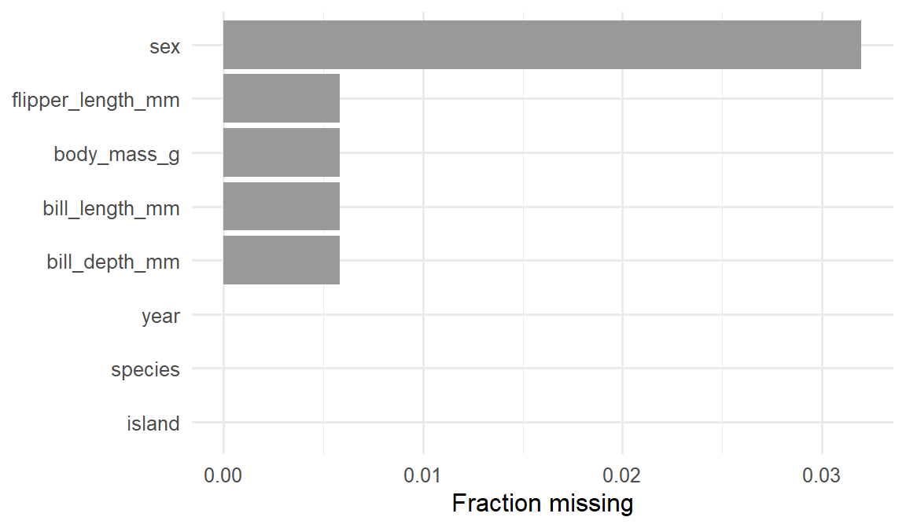

library(tidyverse)
library(palmerpenguins)
set.seed(42)
theme_set(theme_minimal(base_size = 12))Week 1, Session 4 — Import, joins, and missingness with dplyr
Course 1 — Biostatistics Courses
Note
Workflow labs use the variant template: Goal → Approach → Execution → Check → Report.
Learning objectives
- Use
filter(),select(),mutate(),arrange(),group_by(), andsummarise()to carry out routine data management with palmerpenguins. - Join two tables on a shared key and explain the difference between inner, left, and anti joins.
- Spot, quantify, and respond to missing data without letting NAs propagate silently into a summary.
Prerequisites
Labs 1.2 and 1.3.
Background
The bulk of analytic time is spent moving data from the shape it arrived in to the shape an analysis requires. dplyr names the five verbs you need for most of that work — filter rows, select columns, mutate to create new variables, arrange to sort, summarise with an optional grouping. If you learn these six verbs well you will write less code and hide fewer bugs.
Joins are the other half of data management. Real datasets arrive in pieces — a demographics table, a laboratory table, a follow-up table — that must be connected on a shared identifier. left_join() keeps all rows on the left side; inner_join() keeps only matches; anti_join() returns the rows with no match, which is often where data-quality problems live.
Missingness is not rare. A realistic clinical dataset has NAs in at least half its variables, and the NAs are almost never uniformly distributed. The first question to ask of any new dataset is how much is missing, and where? The second is why? Missing-completely-at- random, missing-at-random, and missing-not-at-random are three distinct problems with different consequences for the analysis.
Setup
1. Goal
Reshape the penguins dataset with the standard dplyr verbs, join a derived table back on, and describe the pattern of missingness.
2. Approach
glimpse(penguins)Rows: 344
Columns: 8
$ species <fct> Adelie, Adelie, Adelie, Adelie, Adelie, Adelie, Adel…
$ island <fct> Torgersen, Torgersen, Torgersen, Torgersen, Torgerse…
$ bill_length_mm <dbl> 39.1, 39.5, 40.3, NA, 36.7, 39.3, 38.9, 39.2, 34.1, …
$ bill_depth_mm <dbl> 18.7, 17.4, 18.0, NA, 19.3, 20.6, 17.8, 19.6, 18.1, …
$ flipper_length_mm <int> 181, 186, 195, NA, 193, 190, 181, 195, 193, 190, 186…
$ body_mass_g <int> 3750, 3800, 3250, NA, 3450, 3650, 3625, 4675, 3475, …
$ sex <fct> male, female, female, NA, female, male, female, male…
$ year <int> 2007, 2007, 2007, 2007, 2007, 2007, 2007, 2007, 2007…# Standard five verbs.
penguins |>
filter(!is.na(body_mass_g)) |>
select(species, sex, bill_length_mm, body_mass_g) |>
mutate(mass_kg = body_mass_g / 1000) |>
arrange(desc(mass_kg)) |>
head(5)# A tibble: 5 × 5
species sex bill_length_mm body_mass_g mass_kg
<fct> <fct> <dbl> <int> <dbl>
1 Gentoo male 49.2 6300 6.3
2 Gentoo male 59.6 6050 6.05
3 Gentoo male 51.1 6000 6
4 Gentoo male 48.8 6000 6
5 Gentoo male 45.2 5950 5.95# group_by + summarise: the grammar of a Table 1 row.
species_summary <- penguins |>
group_by(species, sex) |>
summarise(
n = n(),
mean_mass = mean(body_mass_g, na.rm = TRUE),
sd_mass = sd(body_mass_g, na.rm = TRUE),
.groups = "drop"
)
species_summary# A tibble: 8 × 5
species sex n mean_mass sd_mass
<fct> <fct> <int> <dbl> <dbl>
1 Adelie female 73 3369. 269.
2 Adelie male 73 4043. 347.
3 Adelie <NA> 6 3540 477.
4 Chinstrap female 34 3527. 285.
5 Chinstrap male 34 3939. 362.
6 Gentoo female 58 4680. 282.
7 Gentoo male 61 5485. 313.
8 Gentoo <NA> 5 4588. 338.3. Execution
Simulate a small “islands” table with information not in penguins, and join it back.
islands <- tibble(
island = c("Biscoe", "Dream", "Torgersen"),
lat = c(-65.43, -64.73, -64.77),
researcher = c("Anna", "Ben", "Carla")
)
penguins_aug <- penguins |>
left_join(islands, by = "island")
penguins_aug |>
select(species, island, researcher, lat) |>
head(5)# A tibble: 5 × 4
species island researcher lat
<fct> <chr> <chr> <dbl>
1 Adelie Torgersen Carla -64.8
2 Adelie Torgersen Carla -64.8
3 Adelie Torgersen Carla -64.8
4 Adelie Torgersen Carla -64.8
5 Adelie Torgersen Carla -64.8# anti_join finds rows in penguins with no matching island row.
penguins |>
anti_join(islands, by = "island")# A tibble: 0 × 8
# ℹ 8 variables: species <fct>, island <fct>, bill_length_mm <dbl>,
# bill_depth_mm <dbl>, flipper_length_mm <int>, body_mass_g <int>, sex <fct>,
# year <int># inner_join keeps only matches on both sides.
inner_join(penguins, islands, by = "island") |>
nrow()[1] 3444. Check
Quantify missingness at a glance.
missingness <- penguins |>
summarise(across(everything(), ~ mean(is.na(.)))) |>
pivot_longer(everything(),
names_to = "variable",
values_to = "frac_missing") |>
arrange(desc(frac_missing))
missingness# A tibble: 8 × 2
variable frac_missing
<chr> <dbl>
1 sex 0.0320
2 bill_length_mm 0.00581
3 bill_depth_mm 0.00581
4 flipper_length_mm 0.00581
5 body_mass_g 0.00581
6 species 0
7 island 0
8 year 0 missingness |>
ggplot(aes(frac_missing, reorder(variable, frac_missing))) +
geom_col(fill = "grey60") +
labs(x = "Fraction missing", y = NULL)
Now inject missingness to show how NAs move through a pipeline.
n <- nrow(penguins)
inj <- penguins |>
mutate(body_mass_g = if_else(runif(n) < 0.1, NA_real_, body_mass_g))
mean(inj$body_mass_g) # NA — propagates[1] NAmean(inj$body_mass_g, na.rm = TRUE)[1] 4213.0265. Report
Of the 344 rows in
palmerpenguins::penguins, sex was missing in 11 rows (3.2%) and the four morphometric variables were missing in two rows apiece. After an inner join with a three-rowislandstable, all rows matched. Missingness was quantified per-variable and any summary that took a mean usedna.rm = TRUEexplicitly; silent NA propagation would otherwise have produced an NA mean.
Always look at the pattern of missingness before running an analysis. If NAs cluster in one group, a list-wise delete changes the comparison you thought you were making.
Walk through anti_join live — it is the single most useful join for data-quality checks, and under-used in practice.
Common pitfalls
- Forgetting
na.rm = TRUEin amean()and getting back an NA. - Confusing inner and left join and silently dropping rows.
- Using row numbers as join keys after a reshape (they will not match).
- Imputing missingness by hand and forgetting to flag the imputed rows.
Further reading
- Wickham H, Grolemund G. R for Data Science, chapter on data transformation.
- Little RJA, Rubin DB. Statistical Analysis with Missing Data.
Session info
sessionInfo()R version 4.5.2 (2025-10-31 ucrt)
Platform: x86_64-w64-mingw32/x64
Running under: Windows 11 x64 (build 26200)
Matrix products: default
LAPACK version 3.12.1
locale:
[1] LC_COLLATE=English_Germany.utf8 LC_CTYPE=English_Germany.utf8
[3] LC_MONETARY=English_Germany.utf8 LC_NUMERIC=C
[5] LC_TIME=English_Germany.utf8
time zone: Europe/Berlin
tzcode source: internal
attached base packages:
[1] stats graphics grDevices utils datasets methods base
other attached packages:
[1] palmerpenguins_0.1.1 lubridate_1.9.5 forcats_1.0.1
[4] stringr_1.6.0 dplyr_1.2.0 purrr_1.2.2
[7] readr_2.2.0 tidyr_1.3.2 tibble_3.3.1
[10] ggplot2_4.0.3 tidyverse_2.0.0
loaded via a namespace (and not attached):
[1] gtable_0.3.6 jsonlite_2.0.0 compiler_4.5.2 tidyselect_1.2.1
[5] scales_1.4.0 yaml_2.3.12 fastmap_1.2.0 R6_2.6.1
[9] labeling_0.4.3 generics_0.1.4 knitr_1.51 htmlwidgets_1.6.4
[13] pillar_1.11.1 RColorBrewer_1.1-3 tzdb_0.5.0 rlang_1.2.0
[17] utf8_1.2.6 stringi_1.8.7 xfun_0.57 S7_0.2.2
[21] otel_0.2.0 timechange_0.4.0 cli_3.6.5 withr_3.0.2
[25] magrittr_2.0.4 digest_0.6.39 grid_4.5.2 hms_1.1.4
[29] lifecycle_1.0.5 vctrs_0.7.3 evaluate_1.0.5 glue_1.8.0
[33] farver_2.1.2 rmarkdown_2.31 tools_4.5.2 pkgconfig_2.0.3
[37] htmltools_0.5.9